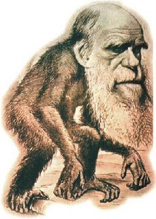
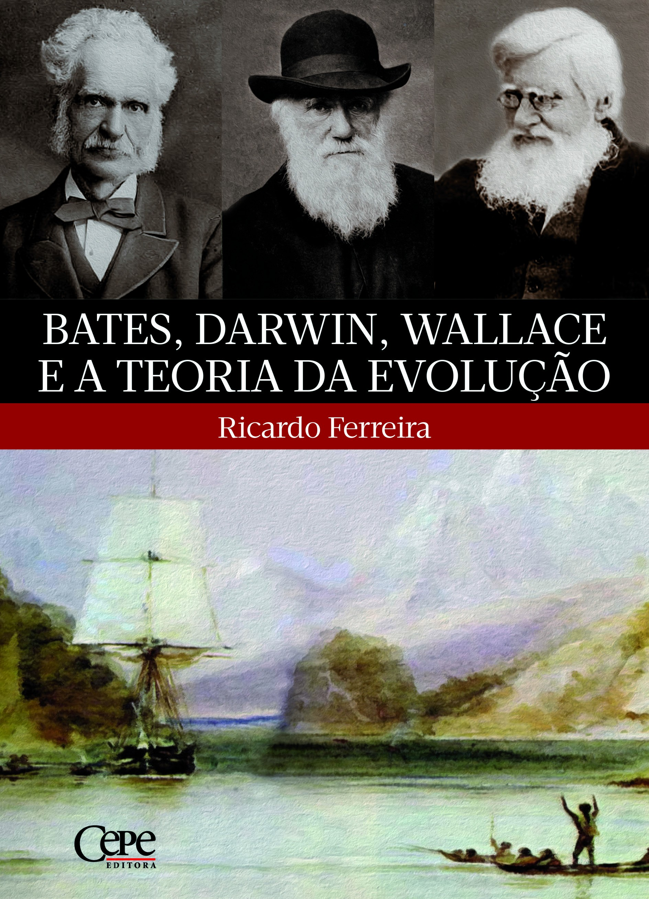
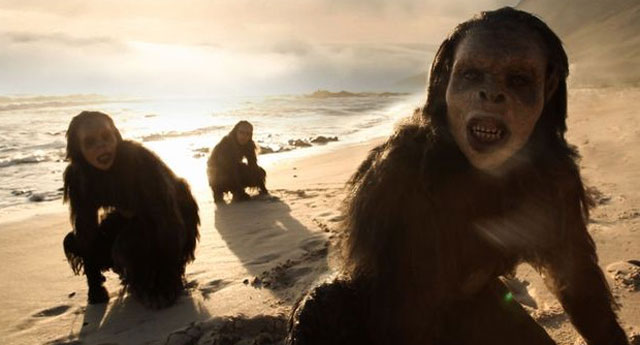
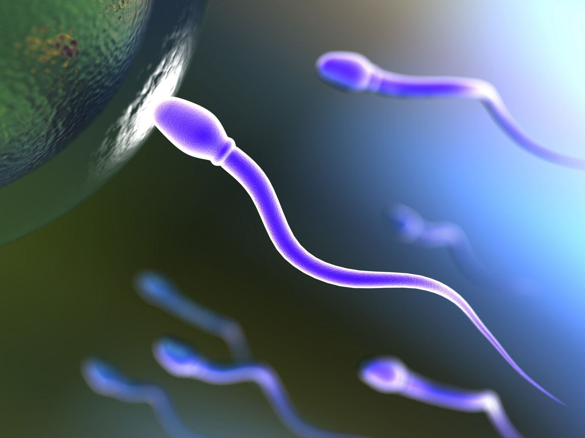

A Teoria da Evolução
Quando falamos em evolução biológica, geralmente o primeiro nome que nos vem à mente é o de Charles Darwin. Entretanto, não podemos atribuir todos os méritos a ele, já que Alfred Wallace também havia percebido muitos dos aspectos que Darwin apontou em suas observações que guardou, basicamente em segredo, por mais de vinte anos. Apenas quando Wallace enviou a Darwin seus manuscritos – devemos nos lembrar que este voltou da expedição bastante reconhecido como cientista - é que ele foi impulsionado a publicar suas ideias. Seguindo o conselho de amigos, a teoria foi revelada com a autoria dos dois, em 1858.O diferencial de Darwin era o conjunto de evidências e argumentos a favor da evolução que possuía. Este fato, somado à sua posição de destaque no meio científico e à publicação do livro “A origem das espécies por meio da seleção natural, ou a preservação das raças favorecidas na luta pela vida”, é o que faz com que, na maioria das vezes, apenas ele seja lembrado.
Os Dinossauros do passado, evoluirao as aves de hoje
Naquela época, os mecanismos de hereditariedade e mutação não eram conhecidos e, dessa forma, temos a teoria sintética da evolução (ou neodarwinismo) como uma versão aprimorada desses princípios desenvolvidos por Darwin e Wallace.

Os Protagonistas da Teoria daEvolução
Agora que já sabemos quem são os autores, vamos conhecer os aspectos desta teoria:- Em qualquer grupo de espécies, todos os indivíduos possuem ancestrais em comum, em algum momento da história evolutiva. Assim, são descendentes destes, com modificações: resultado da seleção natural. - Indivíduos da mesma espécie, mesmo que parentes próximos, possuem variações entre si: resultado de mutações e/ou reprodução sexuada. Algumas dessas são hereditárias, ou seja, podem ser transmitidas para a geração seguinte.
- A limitação na disponibilidade de recursos faz com que indivíduos de uma população lutem, diretamente ou indiretamente, por esses e pela sua sobrevivência. Dessas variações, algumas podem ser vantajosas nesse sentido, permitindo que alguns, nesse cenário, se destaquem e outros não. Esses últimos podem não sobreviver e tampouco podem se reproduzir. - Aqueles que sobrevivem (os mais aptos), podem transmitir à prole tal característica que permitiu sua vitória, caso seja hereditária. - Esse processo, denominado seleção natural, resulta na adaptação de determinados indivíduos ao ambiente, frente a outros não adaptados, e também no surgimento de novas espécies.Colizoes de meteoros com a terra, contribuiram com a selecao natural.
A seleção natural é bastante parecida com a artificial, só que essa última é o resultado de ações humanas (diretas ou indiretas) sobre determinado organismo. A penicilina, por exemplo, foi bastante usada há algumas décadas como principal agente de combate a bactérias e, atualmente, não é eficaz no tratamento de algumas doenças: consequência da seleção das bactérias resistentes, em razão do uso indiscriminado dessa substância.
No dia a dia, costumamos nos referir à expressão "teoria" como sendo algo superficial, simplório, uma especulação. Entretanto, nas investigações científicas, o termo se refere a uma hipótese confirmada por inúmeras experimentações, com alto grau de precisão, durante muito tempo. Assim, estas são dignas de bastante credibilidade. A Teoria da Evolução, assim como a Teoria da Gravitação Universal, são alguns exemplos.

A teoria da evolução de Lamarck
Jean-Baptiste Lamarck ( 1744-1829 ), naturalista francês, foi o primeiro cientista a propor uma teoria sistemática da evolução. Sua teoria foi publicada em 1809, em um livro denominado Filosofia zoológica.Segundo Lamarck, o principio evolutivo estaria baseado em duas Leis fundamentais:
Lei do uso ou desuso:
o uso de determinadas partes do corpo do organismo faz com que estas se desenvolvam, e o desuso faz com que se atrofiem.Lei da transmissão dos caracteres adquiridos:
alterações provocadas em determinadas características do organismo, pelo uso e desuso, são transmitidas aos descendentes.Lamarck utilizou vários exemplos para explicar sua teoria. Segundo ele, as aves aquáticas tornaram-se pernaltas devido ao esforço que faziam no sentido de esticar as pernas para evitarem molhar as penas durante a locomoção na água. A cada geração, esse esforço produzia aves com pernas mais altas, que transmitiam essa característica à geração seguinte. Após várias gerações, teriam sido originadas as atuais aves pernaltas.
A teoria de Lamarck não é aceita atualmente, pois suas ideias apresentam um erro básico: as características adquiridas não são hereditárias. Verificou-se que as alterações em células somáticas dos indivíduos não alteram as informações genéticas contida nas células germinativas, não sendo, dessa forma, hereditárias.

A teoria da evolução de Darwin
Charles Darwin (1809-1882), naturalista inglês, desenvolveu uma teoria evolutiva que é a base da moderna teoria sintética: a teoria da seleção natural. Segundo Darwin, os organismos mais bem adaptados ao meio têm maiores chances de sobrevivência do que os menos adaptados, deixando um número maior de descendentes. Os organismos mais bem adaptados são, portanto, selecionados para aquele ambiente.
Os princípios básicos das ideias de Darwin podem ser resumidos no seguinte modo:
1 - Os indivíduos de uma mesma espécie apresentam variações em todos os caracteres, não sendo, portanto, indenticos entre si.
2 - Todo organismo tem grande capacidade de reprodução, produzindo muitos descendentes. Entretanto, apenas alguns dos descendentes chegam à idade adulta.
3 - O número de indivíduos de uma espécie é mantido mais ou menos constante ao longo das gerações.
4 - Assim, há grande "luta" pela vida entre os descendentes, pois apesar de nascerem muitos indivíduos poucos atingem a maturalidade, o que mantém constante o número de indivíduos na espécie.
5 - Na "luta" pela vida, organismos com variações favoráveis ás condições do ambiente onde vivem têm maiores chances de sobreviver, quando comparados aos organismos com variações menos favoráveis.
6 - Os organismos com essas variações vantajosas têm maiores chances de deixar descendentes. Como há transmissão de caracteres de pais para filhos, estes apresentam essas variações vantajosas.
7 - Assim , ao longo das gerações, a atuação da seleção natural sobre os indivíduos mantém ou melhora o grau de adaptação destes ao meio.

A teoria sintética da evolução
A Teoria sintética da evolução ou Neodarwinismo foi formulada por vários pesquisadores durante anos de estudos, tomando como essência as noções de Darwin sobre a seleção natural e incorporando noções atuais de genética. A mais importante contribuição individual da Genética, extraída dos trabalhos de Mendel, substituiu o conceito antigo de herança através da mistura de sangue pelo conceito de herança através de partículas: os genes.
A teoria sintética considera, conforme Darwin já havia feito, a população como unidade evolutiva. A população pode ser definida como grupamento de indivíduos de uma mesma espécie que ocorrem em uma mesma área geográfica, em um mesmo intervalo de tempo.
Para melhor compreender esta definição , é importante conhecer o conceito biológico de espécie: agrupamento de populações naturais, real ou potencialmente intercruzantes e reprodutivamente isolados de outros grupos de organismos. Quando, nesta definição, se diz potencialmente intercruzantes, significa que uma espécie pode ter populações que não cruzem naturalmente por estarem geograficamente separadas. Entretanto, colocadas artificialmente em contato, haverá cruzamento entre os indivíduos, com descendentes férteis. Por isso, são potencialmente intercruzantes.
A definição biológica de espécie só é valida para organismos com reprodução sexuada, já que, no caso dos organismos com reprodução sexuada, já que, no caso dos organismos com reprodução assexuada, as semelhanças entre características morfológicas é que definem os agrupamentos em espécies. Observando as diferentes populações de indivíduos com reprodução sexuada, pode-se notar que não existe um indivíduo igual ao outro. Execeções a essa regra poderiam ser os gêmeos univitelínicos, mas mesmo eles não são absolutamente idênticos, apesar de o patrimônio genético inicial ser o mesmo. Isso porque podem ocorrer alterações somáticas devidas á ação do meio. A enorme diversidade de fenótipos em uma população é indicadora da variabilidade genética dessa população, podendo-se notar que esta é geralmente muito ampla.
A compeensão da variabilidade genética e fenotípica dos indivíduos de uma população é fundamental para o estudo dos fenômenos evolutivos, uma vez que a evolução é, na realidade, a transformação estatística de populações ao longo do tempo, ou ainda, alterações na frequência dos genes dessa população. Os fatores que determinam alterações na frequência dos genes são denominados fatores evolutivos. Cada população apresenta um conjunto gênico, que sujeito a fatores evolutivos , pode ser alterado. O conjunto gênico de uma população é o conjunto de todos os genes presentes nessa população. Assim , quanto maior é a variabilidade genética. Os fatores evolutivos que atuam sobre o conjunto gênico da população podem ser reunidos duas categorias:
- Fatores que tendem a aumentar a variabilidade genética da população: mutação gênica, mutação cromossônica , recombinação; - Fatores que atuam sobre a variabilidade genética jás estabelecida: seleção natural, migração e oscilação genética. A integração desses fatores associada ao isolamento geográfico pode levar, ao longo do tempo, ao desenvolvimento de mecanismos de isolamento reprodutivo, quando, então, surgem novas espécies.